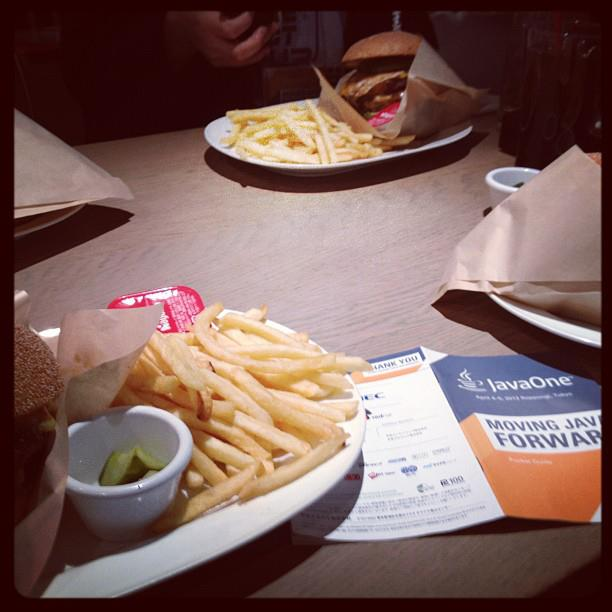
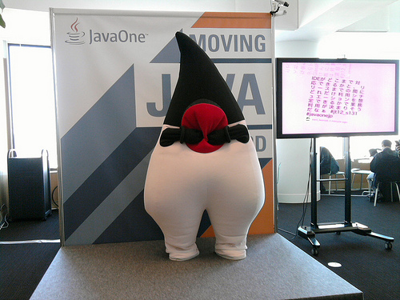
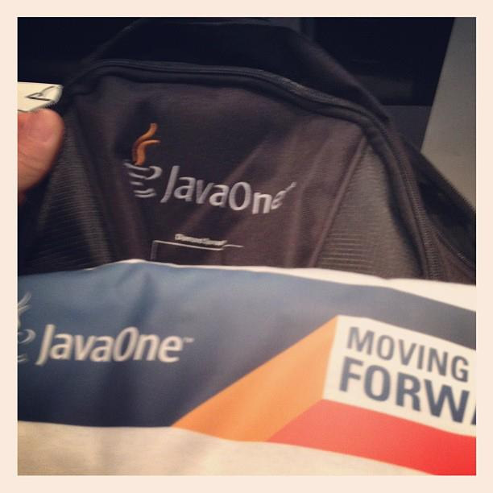
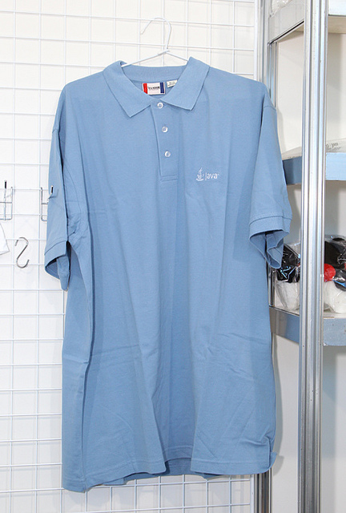

株式会社UCOMの小栗と申します。
こちらは会社報告用に作成した、Oracle非公式の参加レポートです。
基本的に見たもの聴いたものを、私のフィルタを通してお伝えしています。
表現が不適切であったり、内容全体が主観な所はご容赦ください。
2012年4月某日作成
2012年4月4-5日、六本木アカデミーヒルズにて開催されたJavaOneに行ってきた。
7年前は新卒入社2年目でVBやってて、MicrosoftMVPの方が興味あったころ。
JavaOneは米国SF開催で、旅費コミコミで50万円かかるっていうし。
いつも参加者に後日談を聞くばかり。なので今回、初参加！
これ「Duke」だよ、山田くん。ちゃんと覚えてよ。
スーツ多くね？
JavaOneって、スーツってイメージが全く無かったので残念な感じ。
スーツって仕事でプログラミングしてる先入観が強い・・・。
今回は事前に、スーツコスプレやめようぜ。って流れもあっただけにね。
若い人が少ないような？
見た目で判断もアレだけど、なんかオッチャンばかりな気も。
チケット自体は前売りで全て完売したけど、少し気になった。
僕もC#で.NET効果でUnityとか興味が・・・。
JavaSE7からJavaSE8へ革新的な進化を遂げていくよ？
この辺は少し歴史を振り返りながら、どう変わっていくのか別ページで説明しま。
今度こそ、JavaFXに力を入れていくよ？
JavaFXはRIAプラットフォームとして、打倒FlexやSliverlightで2007年に登場。
しかし、2010年にJavaFXScriptを廃止、JavaAPIへの置き換えという決定が・・・。
JavaAPIに入れていくって事で本気だよアピール。Swingバイバイって流れに。
このAPIはGroovyやScalaからも利用可能で、GroovyFXやScalaFXって流れも。
個人的にはJavaFX1.3で開発をしていたので、期待してるます。
Javaは死んでないよっていうメッセージを強く感じた。
だったら、リリースを早くしてよ！って僕は思うんですけど。
GroovyとかPHPを書いた後にJavaに戻ると、
分かりきった事を丁寧に書き過ぎでなげーって感じません？。
だから、ラムダ式とか早くこないかなーって。
ユーザ側の反応は？というと
僕の感覚だけど、思っていたよりも冷めきってなくて、
むしろ色々と形を変えながらも、結構熱い部分はあるんだなって雰囲気。
まぁ、JJUG & JGGUGに出入りしているから、その辺では知ってたけど。
先ずはJavaSE6から！
2006/12/11リリース
JavaScriptを標準で実行できるようになった
AndroidはJavaであってJavaではないので、WebView使ってなんとか
和暦変換が追加された。あると便利かもだけど、どーでもいい感じもする
みんな大好きOOME（OutOfMemoryError）のスタックトレース出るようになった
他・・・、SAXが糞だからDOMあるけど、SaTXもどうよとか？
JAXBにJAX-WSにとXML大好きなやつとか？
そうそう契約を結ばない限り、公式サポートは今年の１１月までですよ！
JavaSE7に移行し始めましょう！
去年のことなので使ったことがなくても、最低限知っておくべきことかも。
2011/7/28リリース
Project Coin
次のページに続きます！
前ページからの続きです！
2011/7/28リリース
Fork/Join
非同期APIを書く時に使うConcurrency Utilitiesだと、
マルチコア時代の細分化されたタスク処理ができないってことで・・・
NIO.2
ファイル操作や階層操作が楽になった感じ、あとフォルダ監視とか
現在、JavaAPIの日本語verは無いです。
翻訳に数千万かかるとかで、有志でやろうかとか。
９年ぶりに言語仕様を改訂しちゃうぞ！？
2013 Summer ???
Project Lambda
Fork/Joinの記述方法があまりにもだるくて、
多言語じゃ当たり前のラムダ式がやっとくる
ラムダ式のサンプルをどっかのページに書いたので、雰囲気はわかるはず
次のページに続くお
前のページからの続き
2013 Summer ???
Project Jigsaw
大規模プログラミング対応、jar地獄から解放してくれるとか。
今までならMaven使うのにpom様を用意だけど、
今後はjar自身が依存性を持ってくれて万歳ぽい
JavaFX3.0
みんな大好きJavaFXがJavaSEに標準で乗ってきます。
Swingとか完全にバイバイですね。
AWTとが何だかったのか、反省会が必要ですね。
ちょっと、リリースが遠くないですか！？
一般公募中心に、コミュニティネタやLTを抑える
「SF開催のJavaOneと同じ内容ぽいのは避ける」、
「一般公募の方が気合い入ってそう」だし、面白かった。
Project Leadな人のセッションで、好きな分野の場合は抑える
やっぱり好きな分野のデベロッパーを生で見るのは楽しいし、
ライブコーディングしてくれるかもなので、ワクワクするよ。
商業臭が強すぎるものは避ける
JPAネタのセッションで「コヒ〜レンス使えば大丈夫」の合図で、
離席しちゃった人たちもいたとか。
ランチセッションに参加する場合、持ち込み制が多い
出入り口混雑でダルイ、昼前と昼後の時間が短い、ボッチだから
やっぱ、日本は狭いよ。人多すぎダメ。
全体的に「Java is Back」押しな印象。
JavaFX押しだけど、ビジネスモデルがいまいち見えてこない。
他、Oracle以外の方も。丸山先生がplay2.0押しで一部マニアが湧いたり。
N社のスーツが残念なスピーチしたり。
櫻庭さんセッションて事で人気だった。
Javaといえば櫻庭さんってイメージなので、当然といえば当然かな。
Javaでファイル操作はダルいので、少しは楽になりそうなきがする。
午後も櫻庭さんから。人が多かったのが印象的。
JavaFX1.XまではUI書くにも、Scriptなので表現が分かりやすく、結構好きだった。
JavaFXScriptは2.Xに上がる時点で廃止されたけど。。。
JavaFX2.Xから大嫌いなSwingバリにJavaを書く感じ。キモイ。
そこでFXMLという構造体様が登場。これでデザイナーさんとの境界線が見えてきたわけ。
サンプル書いたので次ページみて。
JavaFXのサンプル。コンパイルしてないす
public class JavaFXExample extends Application {
@Override public void start(Stage stage) {
Scene scene = new Scene(
LabelBuilder.create()
.text("Hello World!")
.layoutX(25)
.build());
stage.setTitle("Welcome to JavaFX!");
stage.setScene(scene);
stage.show();
}
public static void main(String[] args) {
launch(args);
}
}
JavaFXのサンプル。コンパイルしてないす
<BorderPane>
<center>
<Label text="$helloworld"/>
</center>
</BorderPane>public classFXMLExample extends Application {
@Override public void start(Stage stage) throws Exception {
stage.setTitle("FXML Example");
Parent root = FMXLLoader.load(getClass().getResource
("example.fxml"),
ResourceBundle.getBundle("r.fxml_example"));
stage.setScene(new Scene(root));
stage.show();
}
}ラムダ式のネタ。サンプルを書いてみたので、次ページみてね。
このサンプル。コンパイルしてないす
JButton button = new JButton("OK");
button.addActionListener(new ActionListener() {
@Override
public void actionPerformed(ActionEvent e) {
// イベント処理
update();
}
});これで別スレッドからのUI操作とかになると、
シングルスレッドモデルの違反で、もっとゴチャゴチャしてくる
やりたいのは、ただのボタンイベントの処理を書きこみたいだけなはずなのに。
このサンプル。コンパイルしてないす
button.addActionListener( (ActionEvent e) -> update() );もっと簡単に書くと
button.addActionListener( e -> update() );どうせなら「()」も無くして欲しいけど、こんな感じ。
元Oracleで現MS先輩な佐藤直生さんということで選択。
MS先輩はOS以外はいい感じという事で、Azureも興味ありあり。
Azureは.NET以外にもJava、PHP、node.jsを抑えている所も気になるポイント。
でもお値段、高いんでしょって感じもするけど、装備がカタイってのは重要かも。
さすが安定のMSらしく、分かりやすい資料と説明でした。
JVM言語大会(JRuby VS Groovy VS Scala)を見に行けば良かったなと少し後悔。
19:00過ぎのLT大会も見にいきたかったけど、子供がインフルエンザ中なので
後ろ髪ひかれながらも、飲み会も参加せずに帰宅。
超ぶ厚いハンバーガー
浦川さんは会社、山田君は連絡先知らない。初日からボッチ？
旧友達が来ていたので、最近のSIer事情を聞いたり、○天の話しをしたり。
あんまし覚えていない。なんか昨日との違い分からず、ボーッとしてた。
Oracleの人のスピーチが終わったら、途中で抜けてカフェに逃げ込みまったり。
おぉ、動画でしか見たことのない本物のRichard Bairだ(笑)
ライブコーディングが多かったので、翻訳機なしでも話しが聞けた。
たまに、？？？だったけど。
一番盛り上がったのは、AndroidタブレットとiPadで同じアプリを動かすデモ。
iPad側のデプロイはNetBeansでなくXcodeを！！みんなドキドキ。
ハイブリというとTitaniumで良さそうな気がする。
商用を考えた場合、ライセンス的に「対Apple」、「対Google」とか、
厳しそうだなと思ったり。でも技術的にはワクワク要素強いよね。
お楽しみのハンズオン！息抜きプログラミング！！
サーバーからデータを引っ張ってきて、グラフ表示とか更新とか。
ハマったのは、サーバー立ち上げって残念なミス・・・。
ボッチ
友人はいたけど昼飯時間が勿体無いので、独り東京タワー見ながら菓子パンを。
立ち見が出るほど人気のセッション。
登壇したのはTwitter Japanの山本裕介さん。
山本さんは現在、JSR353の仕様策定に関わっている4人の1人。
JSR353ってのはJCPでやってるJavaの仕様決めの番号で、
こいつはJSONを使うライブラリをJavaAPIに入れようってやつ。
以下、印象的な内容を(やや誇張した表現で)列挙
新規に作成するWebAPIでXML使うやつなど存在しない
Visitorパターンは高尚すぎるので、そんな記法なAPIにはしたくない
Twitterに入社するとTシャツを1枚貰える。
2枚目移行は有料かつ送料自己負担。
僕は今、AndroidアプリやiOSアプリを作っていて、
JavaFXとJavaEEが被ると、前者を選んじゃうんですよねぇ。
JavaEE・・・、僕がエンタープライズ向けなコンサルやマネージャを
やってた時なら興味津々だったんだと思います。
現在、仕事やプライベートでWebアプリを作る時に
JavaEEを直接使う予定もなさげ・・・。
でも、自動テストツールのArquillianは抑えておいたほうがいいかも。
内容だけ見れば容易にとは言いませんが、
大半は事前に知識や情報として抑える事が可能だったと思います。
ですがセミナーや勉強会に参加する価値は、
そのテーマだけでなく、そこに集う人にあると思います。
前日が大荒れな天気だったにも関わらず、
各地の達人たちが一同に介する様は圧巻でした。
登壇した方、野次を飛ばされていた方、実況しまくりな方含め、
全てが1つのコンテンツだったんだと思います。
とても勉強になりました。ありがとうございました。
Oracle社様、このような場を提供して頂きありがとうございました。
自社(UCOM)の皆様、参加させて頂きありがとうございました。
次ページ以降におまけを少々...
JavaOneと各スポンサーロゴ入りバッグ＆Tシャツ
パスケースとストラップ？
Twitterロゴシール
自分のMBAに貼るシール候補になりました(照)
Javaポロシャツ
買ったら買ったで使う機会が無いから、妻に怒られるんだけどさ
/
#